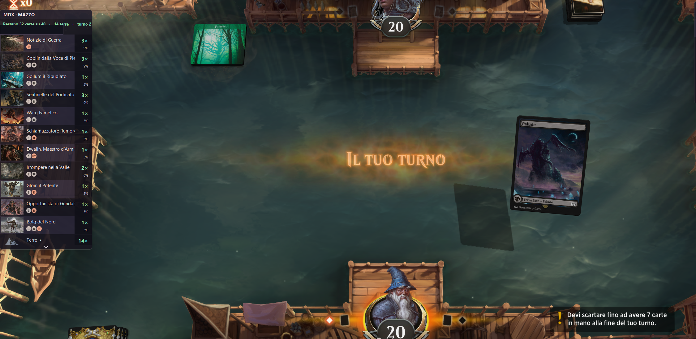

01
DURANTE LA PARTITA · REALE ORA
Segui la partita. Ritrovala dopo.
In gioco, MOX mostra le carte che restano nel tuo mazzo e quelle rivelate dall’avversario: solo ciò che i log di Arena rendono disponibile. Dopo, conserva localmente partite, risultati e contesto dei tuoi mazzi. Nessun consiglio sulle mosse.
Vedi cosa resta locale →